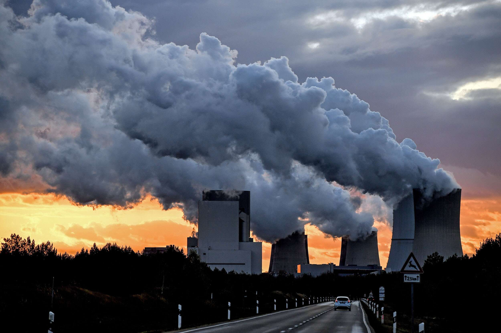

CAUSES OF GLOBAL WARMING
 Global warming is primarily caused by human activities that release large amounts of greenhouse gases into the atmosphere.
Burning of Fossil Fuels: The combustion of coal, oil, and natural gas to produce energy is one of the
primary sources of greenhouse gas emissions. When these fuels are burned, they release carbon dioxide
(CO2) into the atmosphere, which traps heat and contributes to global warming.
Industrial Processes: Manufacturing and industrial processes that use fossil fuels, such as cement
production, also contribute to greenhouse gas emissions.
Deforestation: Trees absorb carbon dioxide as part of the process of photosynthesis. When trees are cut
down or burned, they release the carbon they have stored into the atmosphere, contributing to the
increase of greenhouse gas concentrations.
Agricultural Activities: Modern farming practices such as the use of synthetic fertilizers, pesticides,
and raising livestock produce nitrous oxide (N2O) and methane (CH4) – two potent greenhouse gases. Rice
farming also produces large amounts of methane emissions.
Transportation: The burning of gasoline and diesel in cars, trucks, and airplanes releases large amounts
of greenhouse gases, contributing to global warming.
Land Use Change: Conversion of natural land for urbanization, agricultural or industrial purposes lead
to increased emissions through the destruction of natural carbon sinks.